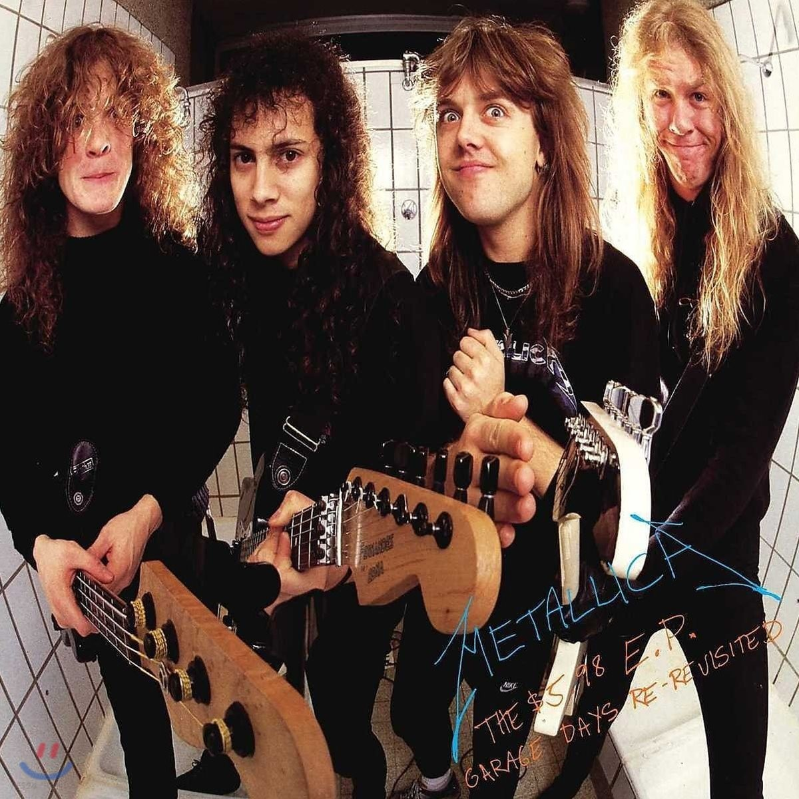

미국에서 기원하여 1960년대 ~ 2000년대 후반까지 전세계적으로 크게 유행한 대중음악 장르의 하나이다. 20세기 초 미국의 블루스, 컨트리, 가스펠 등에서 유래된 로큰롤에서 직접적으로 기원했고, 1950년대 이후 다양한 서브장르로 분화되어 미국과 영국을 중심으로 큰 유행을 거듭하며 발전하였다. '록'이라는 단어는 굉장히 포괄적으로 수많은 종류의 음악을 일컫지만, 대개 보컬리스트, 일렉트릭 기타, 일렉트릭 베이스, 드럼 등의 악기 연주와 4분의 4박자 벌스-코러스 형식으로 특정된다. 가사는 보통 통속적, 문학적, 정치적인 메시지 등을 포함하여 다양한 주제를 다룬다

특징
반복성
인상적인 리프나 라인, 혹은 보컬이 몇 번이고 반복되어 가사보다는 음악 자체에 집중하게 된다. 록 음악 장르의 명곡들을 들어보면 대개 인상적인 부분이 계속 반복되는 것을 알 수 있다.
악기구성 및 리듬
보편적으로 4/4박자의 드럼 리듬이 가장 널리 쓰이며, 비틀즈 등의 영향으로 인해 드럼, 일렉트릭 베이스, 일렉 기타, 보컬리스트가 기본이 되는 4인조의 형태에 다른 세션이 추가되는 밴드 구성이 가장 흔하다. 또한 지미 헨드릭스의 영향으로 디스토션 효과를 먹여 찢어지는 소리가 나는 기타 또한 록을 상징하는 요소 중 하나이다.